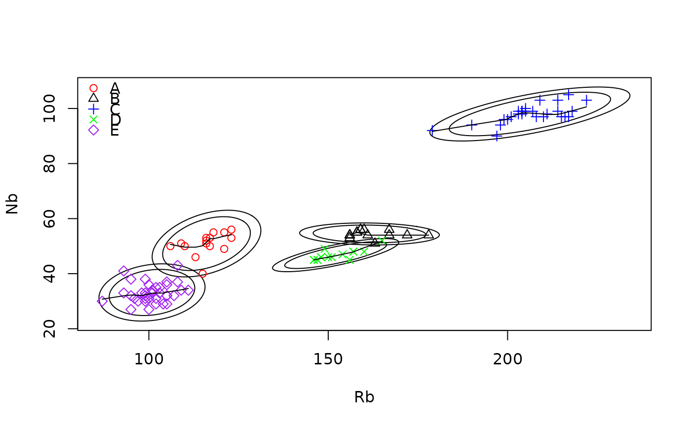
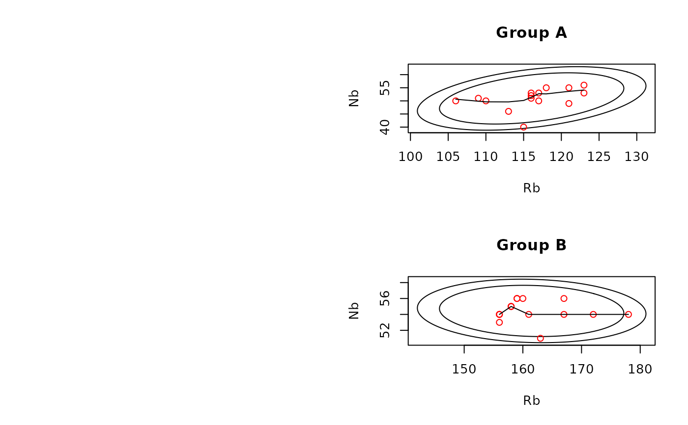
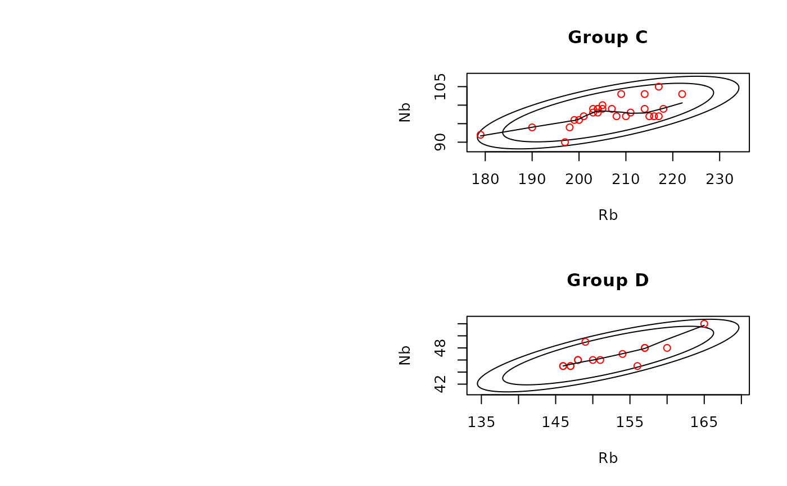
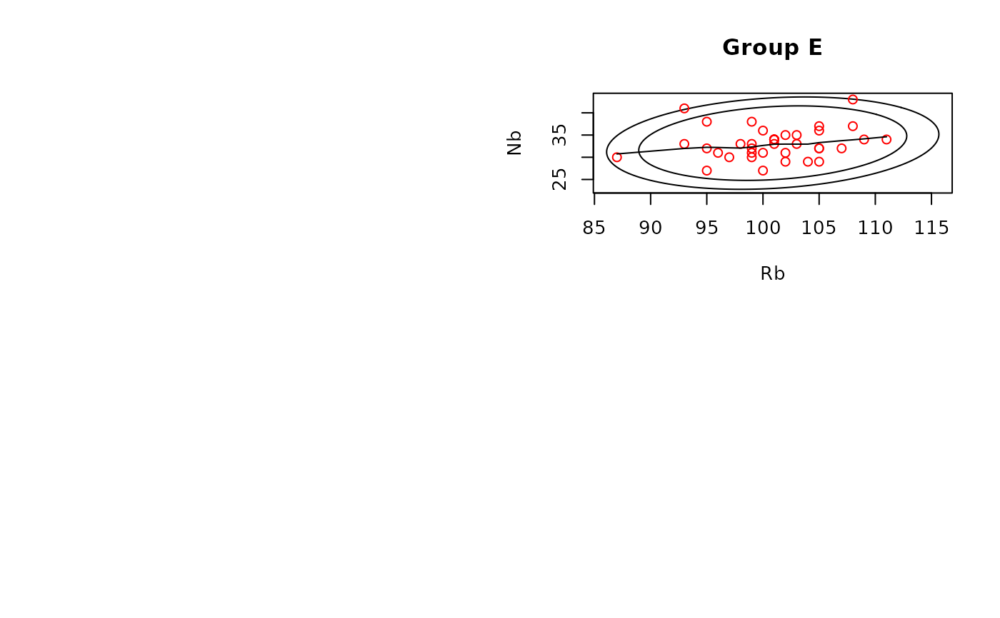

ps_2dPlot
ps_2dPlot.RdCreate 2-dimensional scatter plots, using ps_plot().
Usage
ps_2dPlot(
doc = "ps_2dPlot",
data,
GroupVar,
AnalyticVars,
ID = "none",
Groups,
ByGroup = FALSE,
PlotAllGroups = FALSE,
VariablePairs,
PlotPoints = TRUE,
LowessLine = TRUE,
Lowess_f = NA,
PlotMedians = FALSE,
PlotEllipses = FALSE,
Ellipses = c(0.95, 0.99),
KernelSmooth = FALSE,
Kernelwidth = 0.3,
PlotHulls = FALSE,
parRowsCols = c(2, 2),
Colors = c("red", "black", "blue", "green", "purple"),
legendLoc = "topleft",
Identify = FALSE
)Arguments
- doc
A string documenting use written to the output list; default is the function name
- data
A data frame containing the data to be analyzed
- GroupVar
The name for the variable defining grouping; can be " " if no grouping
- AnalyticVars
The names of analytic variables to be used
- ID
The character value of the name of a lab ID, "none" (the default) if none
- Groups
A vector of values of GroupVar for which plots are to be done; if "All", use all groups; if " ", no grouping
- ByGroup
Logical. If TRUE, show scatterplot for each group for each selection of 2 variables; if FALSE (the default), all specified groups are on one plot
- PlotAllGroups
Logical. If TRUE (default is FALSE), all groups are one one plot, with group membership shown. If PlotEllipses is TRUE, confidence ellipses are also shown.
- VariablePairs
The names of two analytic variables to be shown in the plots, vector of length 2 or matrix with 2 columns; if a matrix, the set of plots is produced for each row.
- PlotPoints
Logical. If TRUE (the default), all points are plotted; if FALSE, no points are plotted
- LowessLine
Logical. If TRUE, a lowess line is plotted for each group; if FALSE, no line is plotted
- Lowess_f
A parameter for lowess() less than or equal to 1, defining the range of x-values used; if NA (the default), uses the default value of 0.67
- PlotMedians
if TRUE, the code for each group is plotted at the median of the values for that group; default is FALSE
- PlotEllipses
Logical. If TRUE, Gaussian confidence ellipses are plotted for each group; if F (the default), no ellipses are plotted
- Ellipses
single value or vector of values with confidence values for the ellipses; default is c(0.95,0.99)
- KernelSmooth
Logical. If TRUE, a kernel smooth is plotted for each group; if FALSE (the default), no kernel smooth is plotted
- Kernelwidth
the proportion of the range of x-values used in the kernel smooth; default is 0.3
- PlotHulls
if TRUE, the convex hull is drawn for each set of points; if FALSE (the default), no hulls are drawn
- parRowsCols
A vector of length 2, with the numbers of rows and columns for a plot when plots are shown by group; default is c(2,2)
- Colors
A vector with the colors of plotted points, used sequentially for the groups
- legendLoc
Character. Identifies the location of the legend for a plot showing all groups on one plot. Default is "topleft"; alternatives are "bottomleft", "topright", "bottomright"
- Identify
if TRUE, user can identify points of interest in the plots; default is FALSE
Value
usage: A string with the contents of the argument doc, the date run, the version of R used
dataUsed: The contents of the argument data restricted to the groups used
dataNA: A data frame with observations containing at least one missing value for an analysis variable, NA if no missing values
params: A list with the values of the grouping, logical, numeric and Color arguments
analyticVars: A vector with the value of the argument AnalyticVars
dataCheck: If ps_identify = TRUE, a data frame with the information on user-identified points of interest
Details
With multiple plots, execution halts after each page is complete; enter c (continue) at the prompt to continue execution. For a plot of the labelled convex hulls of the groups, see the example code for the required combination of logical arguments.
Examples
# All Jemez obsidian sources on one plot
data(ObsidianSources)
analyticVars<-c("Rb","Nb","Zr","Y","Sr")
temp<-ps_2dPlot(data=ObsidianSources,GroupVar="Code",Groups="All",ByGroup=FALSE,
AnalyticVars=analyticVars,VariablePairs=c("Rb","Nb"),PlotEllipses=TRUE,PlotAllGroups=TRUE)

# Plots of obsidian source data for each source with confidence ellipses and lowess lines
data(ObsidianSources)
analyticVars<-c("Rb","Nb","Zr","Y","Sr")
temp<-ps_2dPlot(data=ObsidianSources,GroupVar="Code",Groups="All",ByGroup=TRUE,
AnalyticVars=analyticVars,VariablePairs=c("Rb","Nb"),PlotEllipses=TRUE,PlotAllGroups=FALSE)


# Plot of the labelled convex hulls of the obsidian source data for each source
data(ObsidianSources)
analyticVars<-c("Rb","Nb","Zr","Y","Sr")
temp<-ps_2dPlot(data=ObsidianSources,GroupVar="Code",Groups="All",ByGroup=FALSE,
AnalyticVars=analyticVars,VariablePairs=c("Rb","Nb"),PlotEllipses=FALSE,LowessLine=FALSE,
PlotHulls=TRUE,PlotMedians=TRUE,PlotPoints=FALSE)
